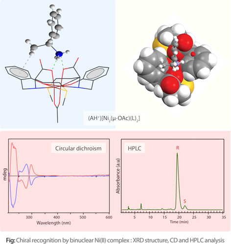
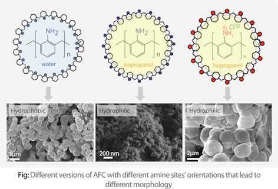

Chiral recognition using metal complexes: Chiral molecules are important in biological systems as evidenced by different properties showed by different enantiomers of the same molecules. We developed chiral host using amino acid derived ligands and Ni(II) in recognizing chiral amines and biogenic amino alcohols.

Amine functional polymers: We focused on synthesis, molecular level characterization of aniline formaldehyde condensate polymer in its different versions where amine site orientation, accessibility are well controlled and its application on heavy metal adsorption. We also worked on functionalization of Chitosan biopolymer and its preference towards heavy metal binding.
